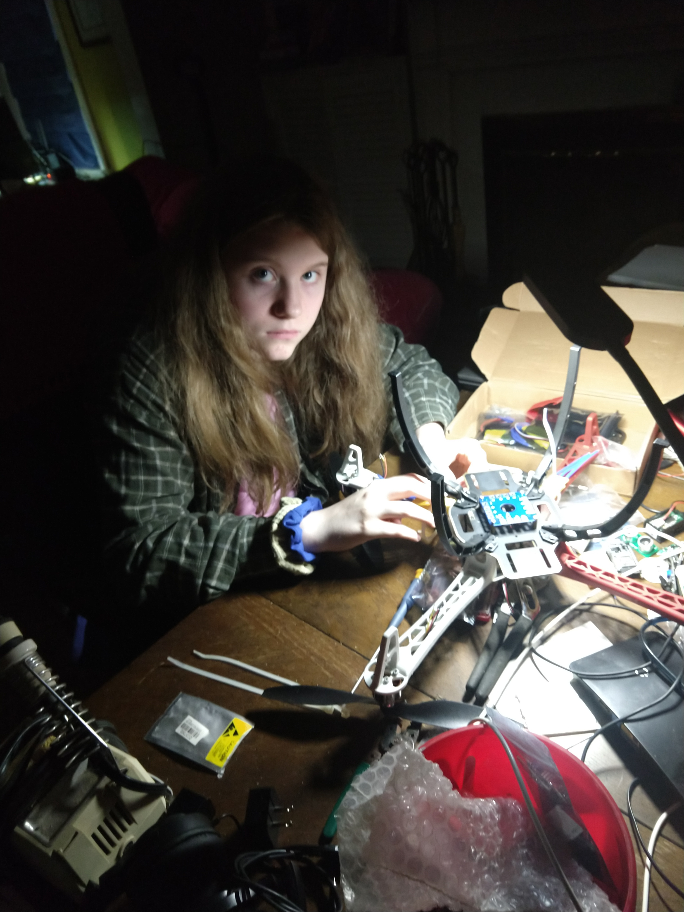

This is an esp-idf project with an ESP32 acting as a flight controller and receiver for F450 quadcoptor drone and an esp8266 D1 mini as radio control transmitter.
I did a project recently with an mcp6050 gyroscope and accelerometer, impressed with the capabilities and ability to keep a reasonable integral of inexpensive mems sensors I decided to find something to control. Some ebay searches pretty quickly lead me to consider building a quad copter. I soon found a kit containing f450 frame, brush-less motors, electronic speed controllers and props for a little over $50. They even threw in a CC3D flight controller module, which not part of the original plan helped firm up a development strategy. My plan is to develop stable platform that will hover (and return) to one spot before trying to focus on 'flight' concerns.
I've been hobbying around with esp devices for a few months now and have decided to use an esp8266 D1 mini as my transmitter base station and an esp32 as my receiver and flight controller. At first the flight controller aspects will be shared with the CC3D flight controller that I got with my kit package. I hope to integrate the CC3D functionality into the esp32 as we go along, but there is a lot of learning to do here that I can reverse engineer with the CC3D and cleanflight.
Transmitter requirements :
Using a webpage as input and a TCP connection between transmitter did not work out,
I have familiarity with the IP and was able to test it out in a few hours. Packets
started getting backed up at a 300msec launch rate, maybe this could be improved but
probably not by a order of magnitude. A couple of browser joysticks on a cell phone
might have been nice, right now this approach seems to have limited capability but might
be worth revisting in the future if a low update rate control seems able to control
the copter. The project is now heading in a transmitter to flight
controller receiver interface using espnow framed wifi station/access point connectivity
and i2c interface to ground station hardware (physical joysticks, switches and display).
Tests showed a 3x range improvement over my router without the connection and
tethering hassles, and much much better packet rates. The espnow protocol is
directly between the esp devices to their mac addresses with crc checks and limited
handshaking.
The joysticks being, temporarily, used are pretty horrible. They have a huge
dead spot at the center where the output resistance doesn't change for about 15
degrees each side of center and the rest of the range is used up well before coming
to limit of travel, so the whole usable range is about 15-40 degrees each side
of center. The joysticks center position resistance varies considerably and needs
to be calibrated and they return to center.
A data acquire task loop is run in the transmitter to read voltage values from
an ads1015 every 20msec. The readings are used to update local values for throttle,
yaw, pitch and roll. The yaw, pitch and roll are 10bit values coming from the adc,
the center rest position value is subtracted, the result adjusted by a chosen gain
and added or subtracted (depending on orientation of joystick) to 1500. The throttle
returns to center so its reading (after calibration offset) is accumulated
(and multiplied by chosen gain) and added to 1000.
Events are scheduled to run espnow_send every 20msec and a callback for
espnow packets received. The espnow_send transmits a string containing the throttle,
yaw, pitch, yaw and other parameters. The callback string received from the
flight controller contains telemetry (blackbox) data which is forwarded to the
console serial port for collection by attached pc for analysis.
Flight Controller and receiver requirements :
The current goal of the project is use the CC3D flight controller with an
esp32 receiver interface. The CC3D has a nice interface to simulators such as
cleanflight that allow easy setup of ESPs, mems and motor calibration, pids and
filtering and telemetry data collection as long as connected (these features will
help get started a lot quicker and provide a great debug assistance). The esp32
receiver will need to talk to the CC3D flight controller to supply transmitter data
and to obtain telemetry data and write pid, filter and status registers.
When the CC3D flight controller is attached to cleanflight and you snoop on the
port with an intermediary (interceppty worked for me - or using three usb dongles)
you can see binary data being transferred which turns out to be MultiWii Serial
Protocol (MSP), full documentation is hard to find but can be pieced together and checked
against snoop data to come up with a good mcp.h file. The actual motor control
path parameters (throttle, yaw, pitch, roll, motor speeds) all seem to be blocked
read only with the MSP interface at least with my CC3D board (this board also didn't work
with later versions of software so I used cleanflight to download firmware backwards until
the CC3D booted up). I have gotten one of the CC3D serial ports hooked up to
my esp8266 (which I am doing initial development with) to read mcp parameters from the
CC3D, and even to negotiate an esp32 hookup directly to cleanflight.
The motor control path variable can not be written with MSP with my version of
CC3D and I do not want to use servo pulses to import my throttle, yaw, etc..
values to the flight controller. Decided to use the SBUS semi-digital protocol
for this purpose, my version of CC3D also does not support the sbus_invert cli
command so an inverter had to be built from a 2N2222 and two resistors. To help
debug the development of the SBUS interface I wrote a couple C programs
(repository here)on my desktop to
write SBUS protocol packets for 16+2 channels and another to monitor and decode
SBUS packets. Both the esp8266 and the linux program have demonstrated SBUS packet
transmission to the CC3D flight controller as monitored by the cleanflight transmitter i
tab and flight simulator.
So, at this point, I can have my CC3D flight controller on my desk hooked up to my desktop and walk 150 feet down the street with my ground station sending throttle, yaw, pitch and roll information. Still need to verify that the other CC3D port can be used so that the esp32 can have SBUS and MSP running at the same time with the flight controller - just sending a dummy packet back right now.
My F450 drone kit has literally just arrived from it's slow trip across the pacific, actually it took exactly two weeks - about half of the estimated delay (I still don't have any batteries so I just ordered some 3s's from amazon - things cost 60% of what the whole drone cost - find it amazing that a small battery like that can put out 80Amps!). Got a lot of work to do building this thing and not make it look like a kludge, but just got a new soldering iron and plan to look at some youtube F450 builds before smashing the thing in uncontrolled ascent to ceiling (considering various mechanical tethering options). Having the cleanflight interface for initial setup will save a lot of time.
----------- Log Entry (09-30-19) -------------
Deceided to upgrade the drone side ESP device to a ESP32 module instead of the ESP8266 D1mini that was being used using initial espnow checkout, figure that the ESP32 leaves more room for future enhancements. Noticed I was getting a little bit of noise in the cleanflight transmitter tab - every few seconds my throttle, yaw, pitch and roll values would jump around a bit even though the controls on the ground station were not touched. For the sbus signal inverter I was using the 3.3v from the esp32 module. To add a 5 volt level to my system had to go external because there appears to be no way to get the esp32 module or the cc3d flight controller board to source +5volts (plan to use dc-dc converter to generate +5v from the 3s lipo). I, temporarily, added the +5v from a usb to serial dongle and now the sbus interface has had no errors in the half hour I observed. I include a link to video of the setup as it current is controlling a drone simulator on the cleanflight transmitter tab page.
One nasty that did occur as I was writing the sbus code for the esp32 module. I had the code ported from the esp8266 to the esp32 and it looked to be just about running, I was testing it with my desktop linux sbus_monitor program and noticed that about 5% of packets were showing up bad. The esp8255 D1mini did not show any packet loss. When I plugged the sbus into the cc3d there were no received packets (and no way to find out why apparently). Went back to the sbus_monitor program to debug packet loss and discovered the following in the table shown below.
| SBUS Serial Port Buad Rate ESP32 Port | Packet Loss Percentage to sbus_monitor program | Packet Loss to CC3D SBUS port |
|---|---|---|
| 95,000 | 100% | 100% |
| 98,000 | ~10% | 100% |
| 100,000 | ~5% | 100% |
| 101,000 | ~1% | ~~20% |
| 102,000 | ~0% | ~0% |
| 103,000 | ~1% | ~~20% |
| 104,000 | ~5% | 100% |
| 105,000 | ~10% | 100% |
| 100,000 | 100% | 100% |
The esp32 module programmed with a sbus baud rate of 102,000 does not show any packet loss as far as I can see. Interestingly the cc3d sbus connection does show sbus packet confusion at 101,000 and 103,000, the port does not register any activity at 100,000 or 104,000 baud. Which is to say that the cc3d is much more sensitive to baud rate than my desktop. This problem would have been VERY complicated to debug without the linux sbus_monitor program. cleanflight doesn't seem to have much in the line of port packet monitoring or diagnostics (except for the usb port).
As was mentioned earlier the esp8266 modules appeared to have no problem with the 100,000 non-standard baud rate generation and I don't know if other esp32 modules are off by the same amount.
Got my batteries today and plan to start build of quadcopter with my daughter within the next few days.
----------- Log Entry (10-02-19) -------------
Managed to get rid of the SBUS inverter by switching to the second uart port (uart3 in clenflight) on the CC3D (labelled flexiport instead of main port). Also have uart1 configured as configuration/msp port at 115,200buad which I hope to use to send telemerty/blackbox data down to ground station transmitter. In cleanflight it looks like only one serial port can be configured serial rx at a time, when a configured both uart1 and uart3 to serial rx only uart1 was active. When uart1 was configured configuration/msp uart3 started working as serial rx which I configured to sbus.
Further communications testing looking very promising two way espnow betwen rx and tx and sbus to flight controller.
Add ssd1305 display to ground station transmitter for real time display of throttle, yaw, pitch and roll. I really dislike the cheap joysticks and am looking for replacement - I added the display to help me get used to the play on these controls, they have to be moved a lot off center before value changes at all and then it maxes out with very little further travel.
----------- Log Entry (10-03-19) -------------
Its time to outline data acquisition, filtering and control goals and implementation stages. As a first guess this is what is being experimented with first.
Acquisition : Gyroscope data will be stored in fifo at 1KHz rate, accelerometer data gathered at 20msec interval at which time data is processed through filtering, control loop and downloaded. Other data such as magnetometer, barometer, laser range finder, gps, etc. may also be collected if new hardware is added.
Filtering : The MPU6050 accelerometer data I am familiar with has a large high frequency component that we do not want getting into our feedback control loop, we should be designing toward a two pole low-pass filter with a cutoff frequency somewhere in the range of .5-2Hz. The gyroscope data will be used for the higher frequency flight adjustments, the lower frequency drift component may need to be filtered out. It may turn out to be useful to notch filter the servo motor control outputs for any observed system sympathetic resonance.
Feedback Control : Three 1KHz PID loops are necessary to control the yaw, pitch and
roll axis which will use the gyroscope data. The inputs for each of these loops will
be the result that we desire on each on each the integrated gyroscope axis - which can
be imagined as something like the angle that we would like. The output
of these loops will be combined up to generate servo commands to each of the four motors.
Suppose for example we would like to move forward - the transmitter sends a servo pitch
value that specifies a desired forward tilt to the craft. The control loop will speed
up the back rotors, lifting the back of the drone (and creating force in x axis) until
the gyroscope catches up to the forward tilt command, the speed and stability of this
transaction is determined by the P, I and D loop multipliers. Gyroscope data is useful
to keep the craft in a desired attitude (not rotating on x (yaw), y (roll) or z (pitch)
axes), these are the inner high speed, 1KHz, portion of the control circuit.
The accelerometer data provides information to the control loop that helps to
imply an xyz point that we wish to maintain. Each of these axes will also have a PID loops
moderating corrections, these are the outer 50Hz portion of the control circuit. For example,
if the wind is blowing the gyroscope would not notice it (unless the drone was being twisted)
but the accelerometer would notice an x or y acceleration. This can be somewhat controlled out
with accelerometer data PID loops whose output is feed into the gyroscope PID loops
just like transmitter pitch or roll inputs (ie I'm getting pushed to the right by a
force so lean into it - P gain is how much to lean, I gain is how much to recover from
a previous uncorrected push and D gain tells to loop closure to slow down once you start getting
close). In software, PID loops are very simple - an error signal is generated at the input
which is the difference between the angle that you want the quadcopter to be in and the
angle that the gyroscope measures that it is in. The error then follows three paths.
The P(roportional) path is simply multiplied by the P gain. The I path has an accumulator
which is the sum of all previous error inputs which is multiplied by I(ntegral) gain.
The D(erivative) path is the difference between the current error signal and the
previous one which is then multiplies by the D gain. The output of the loop is the sum
of these three, PID, paths which are combined with the other gyroscope PID loops outputs
to generate motor speed commands. Tuning the loop gain parameters can either be done by
simulation or tuning the actual system flight response.
BlackBox Telemetry : A data packet will be sent to the ground station for collection every 20ms (50 times per second). The payload frame will contain the filtered acceleration 3 axis data, slots for future use (magnetometer, status, estimated altitude, etc) within the first 50 bytes. Initially, 150 bytes will be reserved for the raw gyroscope datar, eventually we will use bits in a configuration word to determine the configuration of the payload (if for example we would like to collect raw motor servo data).
Milestones : First target is to collect all necessary data and blackbox it down to the ground station every 20mssec. The accelerometer data will be filtered. The gyroscope data will be sent down as raw byes from the mpu6050 fifo read. First test flights will probably be with the CC3D flight controller doing the actual work and the data being collected by the esp32 flight controller only reporting gyroscope and accelerometer data. Next step will be to start programming CC3D flight controller with PID gains of 1,0,0, which basically shuts off PID and sends input data to motors. Then lastly control motors directly from esp32 flight controller.
----------- Log Entry (10-04-19) -------------
Got done building and testing a 50msec loop in the esp32 flight controller that reads three axes of acceleration data, from a mpu6050, and filters it through a 4 pole butterworth. Also wrote an acceleration calibration subroutine (average of 16 measurements), also bought a small (32mm diameter) xy spirit level from ebay (75 cents) to mount on the quadcopter. Tried several differnet cut-off frequencies, 0.25, 1, 4 and 10 Hz. The output displays roll and pitch in degrees and the z-axis gravity. Just sitting on my desk running the 1Hz filter pitch and roll outputs were always within +/-0.2degrees and z-axis from 0.9997-1.003g. Tilting board 45 degrees gave me 45 degress roll or pitch and .707g z-axis. The 1Hz filter was steadier than the 4 or 10Hz filters and the 0.25Hz just felt a little too slow. Found it really impressive how just pushing the board across the desk gives a real actionable signal - bet you could even build a pretty reasonable mouse. It also gives a strong integral signal that will be used to stand up against wind or returning to a location that it was pushed out of.
Started work on 20msec loop that will read 1KHz gyroscope outputs and process that data trough the integrators and PID that will eventually supply the motor outputs, the ESCs that came with my kit only take servo inputs so I will eventially have to deal with that. Collecting the data and doing limited processing is not unveiling any cpu resource problems at this point. I am getting more confident that this can work.
Hardware wise, my daughter and I have kit mostly all built up to the point where we need to start doing some soldering. Added a DC-DC converter to supply esp32 and CC3D.
----------- Log Entry (10-11-19) -------------
Last week we spent time doing all the placement, wiring soldering and heat shrink to our kit  and it is looking pretty good. Montana has been taking the mechanical/hardware lead and logging most of the flight time while I have been sticking to the systems and sodtware end of things. The CC3D hooked up to cleanflight easily and we got the escs calibrated on the motors tab page, the motors all started at 1032 and sounded good. Next the props were reinstalled, the drone teethered and we spun up the motors a bit. Liftoff was shortly followed by instability and crash into pillows setup all around. Neither of us has never researched the actual mechanics of drone flight or ever flown a drone and it took a while to figure out the throttle=1000,yaw=2000 arming proceedure. The transmitter was not sending full range so a few lines had to be added to code to arm and disarm. Our first test was a very short one endinging in what looked like a powered crash instead of just instability, quickly realized flight controller needed to be facing forward so that correct motors would be getting corrections. We did have a few newbie hickcups along the way - at first we, incorrectly, assumed the 1045R props would go on the counterclockwise motors. Next we neglected to align the CC3D flight controller in the forward direction of the quadcopter as defined by out motor hookup.
Test flights are continuing and we are getting the hang of hovering and moving around a bit. The horrid joysticks are difficult to get used to and we are looking forward to replaceing them.
Got a loop working with the ESP32 doing an SPI read of an MPU9250 reading gyroscope data being loaded into fifo at 1K samples per second. I'm currently stuck getting the fifo dumps to run faster than 10ms (with an occasional 20ms) and the mpu9250 fifo length is 512 bytes - so I really can't quite get 8K samples per second to work - this will be revisited once 1K samples/sec working and deemed insufficient. There are several ways to do this that should be possible but going to try 1K samples/sec first and make sure everything else works too. Setup integrators and PID controls and starting serious consideration of how to weight these in with control channels...
Considering taking a brief simulation detour but can't find much performance data to make calculations with. Without a good simulation, or proably even with one, need arises to develop good testing flows with realtime feedback to tune control system from total scratch. The default PID, filter and control flow of default CC3D controller with cleanflight are kind of surprisingly good. First test liftoffs of drone with direct motor control from master (a lied and attached props - but took teethering procaustions) were predictable very unstable. We attached CC3D flight controller with default settings, and after an initial try out where the flight controller was attached to frame not pointing forward - resulting in instant crash, jumped up to a hover and shows signs of real controlled flight. The joysticks that I have are still a major fustration (new ones on boat from china) but the drone does fly and my daughter is getting pretty good at handling it.
----------- Log Entry (10-12-19) -------------
The CC3D that we have only seems to support gyroscope innerloop PIDs and accelerometer data is not used. My hope in this project is not to build a racing drone but to build a drone that is stable and responds to commands with precision. The software for the gyroscope output inner control circuit is well underway, the focus now will shift to experimenting with accelerometer output to see how well it will calculate relative x, y and z distances (in feet) from where it was startup to see if this data can be accurate enough to run an outer loop.